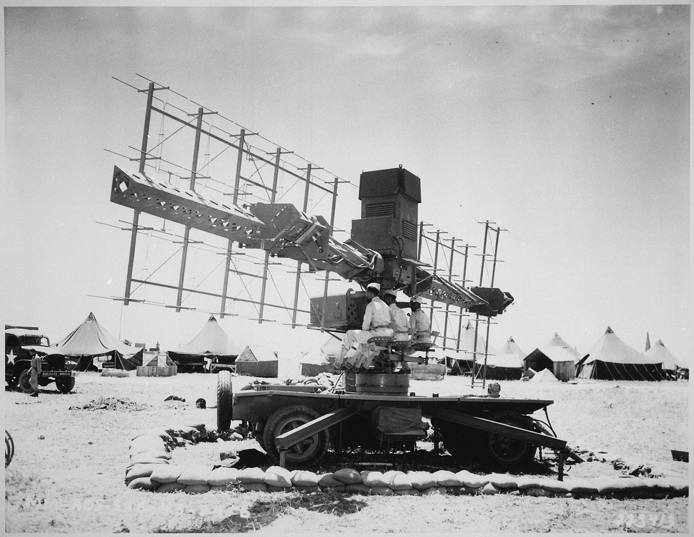
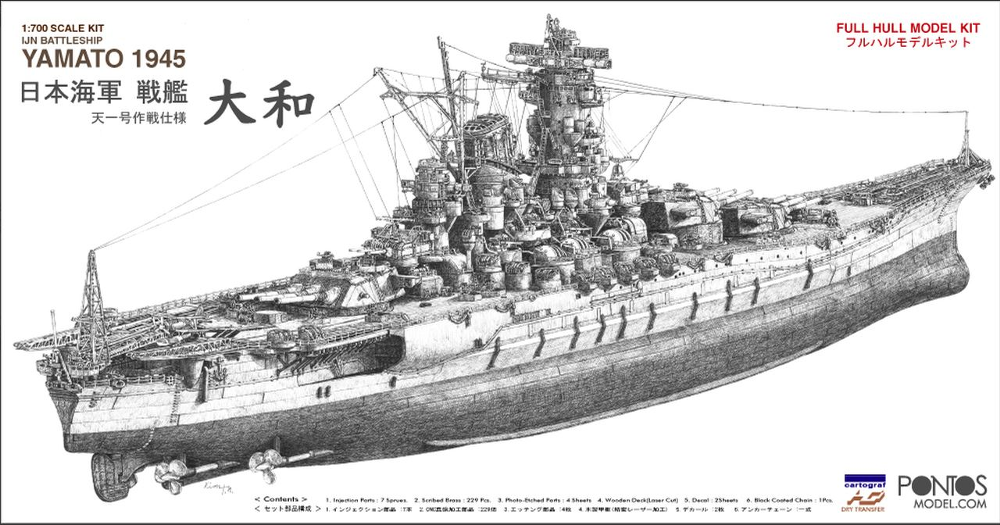
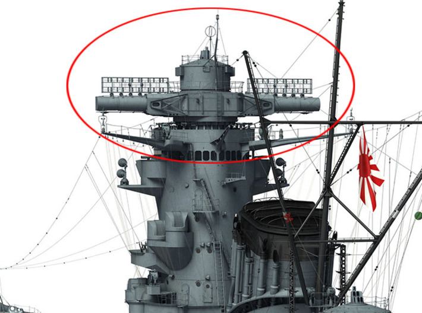
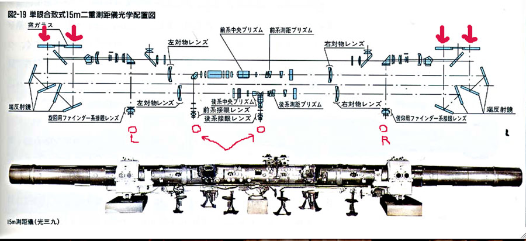
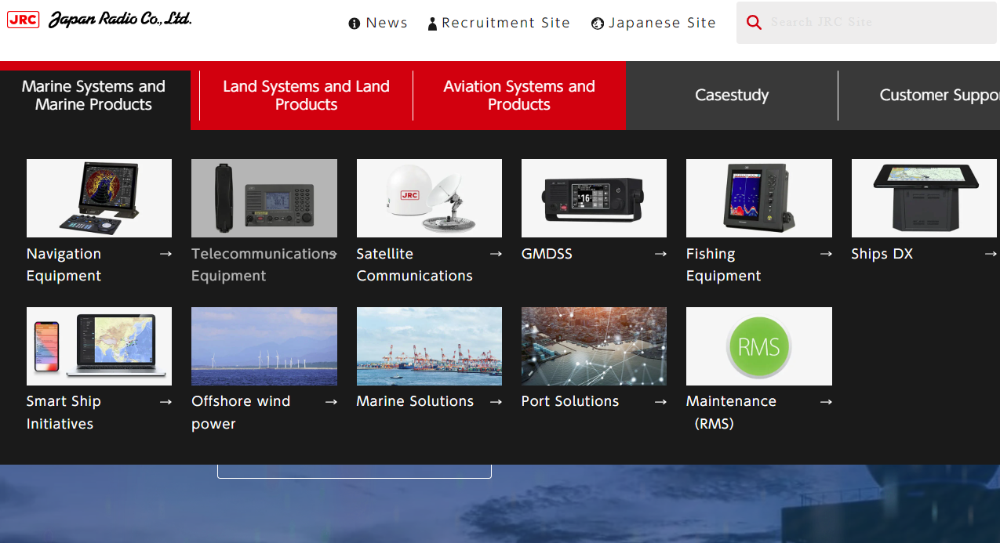
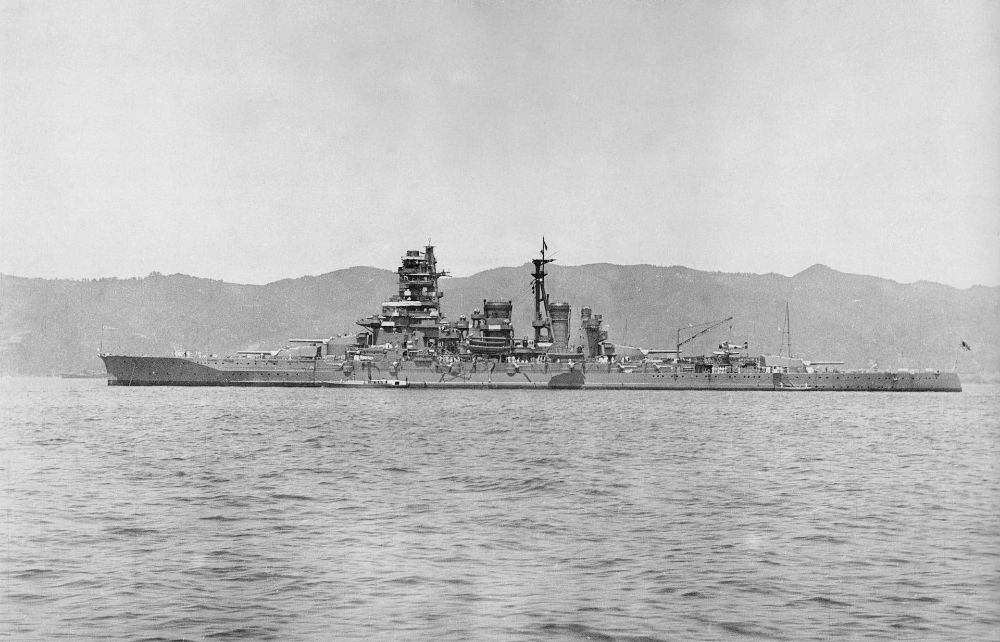

과달카날에서의 레이더 이야기 (3) - 남자라면 중후장대(重厚長大)!
게시: 2024-02-22T06:30:14+09:00
<일본은 왜 레이더를 경시했나?> 그러니까 일본은 레이더 개발을 위한 기초 기술도 가지고 있었고 레이더라는 물건이 어떤 용도로 어떻게 사용될 수 있는지에 대해서도 충분히 알고 있었음. 전쟁 전에는 기술 이전을 꺼리던 독일도 WW2 개전 이후 적극적으로 레이더 기술을 일본에 전수해주려 했는데, 아예 뷔르츠부르크(Würzburg) 레이더 한 세트를 잠수함에 실어 일본에 보냈음. 그러나 그렇게 두 척을 연달아 보냈으나 두 척 모두 일본에 가는 도중 격침됨. 하지만 별도로 보낸 주요 부품과 설계도는 그대로 일본에 도착. 뿐만 아니라 싱가폴의 영국군 기지를 함락시킨 뒤 영국 육군의 GL Mk-2 radar와 탐조등 제어용 레이더 (Searchlight Control, SLC)를 노획했고 특히 SLC의 조작법이 적힌 문서도 고스란히 획득. 필리핀 코레히돌 요새를 함락시킨 뒤에는 미육군의 대공 레이더인 SCR-268를 사용 가능한 상태 그대로 노획.

(북아프리카 카사블랑카에 진주한 제90 해안포 부대가 갖춘 SCR-268 레이더) 그런데 대체 왜 일본군은 레이더를 무시했을까? 일단 이건 소위 일본 대본영의 경직된 문화 문제가 큼. 당시 일본 육해군 사관학교에는 공부 잘한다는 엘리트들이 잔뜩 몰려들어 자기들끼리의 세계를 만들었고, 또 같은 사관학교 출신들에서도 임관 이후의 근무성적보다는 사관학교 졸업성적이 평생의 승진에 매우 중대한 영향을 끼쳤음. 이건 특히 해군이 심했는데, 육군도 다르지 않아 근무성적 따위보다 임관 이후 고위장교가 되기 위해서 꼭 가야하는 육군대학의 성적이 승진에 절대적으로 중요했음. 성적순으로 승진하는 것은 공정한 것이라는 생각이었는지 모르겠으나, 이렇게 한때 시험 잘봤던 애들끼리 자기들만의 세계관에 갖히다 보니 발전이 없었음. 생물의 진화를 '더 진보된 형태로의 발전'이라고 보는 시각도 있으나 그건 크게 잘못된 것이고 생물의 진화는 더 나은 방향이 아니라, 그냥 다양성을 추구하는 방향으로 나가는 것. 그 다양성 중에서 그때그때 주어진 환경에 적응하는 것들이 살아남아 번성하는 것. 그런데 일본군부는 육군이나 해군이나 모두 다양성과는 담을 쌓은 순혈주의 엘리트들만의 세상이었음. 1941년 말 일본이 진주만에 겁도 없이 뛰어들 때, 실무급의 영관급 장교들에게는 대부분 1920~30년대 받은 교육이 최신 교육이었고, 그들은 그 시절 익힌 독일과 영국의 우수한 광학 기술이 탐지 기술의 결정체라고 믿고 있었음. 자신들이 사관학교에서 배우지 않은 최신 전파 기술과 전자 공학 등은 눈에 보이지도 않고 자잘한 장치들을 쓰는 것이라서 웅장하고 선명한 것을 좋아하던 자칭 사무라이들에게는 매력이 없었던 것.

(원래 눈에 안 보이는 것보다는 저렇게 눈에 잘 보이고 뭔가 웅장한 분위기를 내는 물건이 남자들의 마음을 끌기는 함.)
 
(전함 야마토의 꼭대기에 장치된 광학기술의 결정체, 거리측정기. 대물렌즈의 크기는 120mm, 30배율, 최대 측정거리는 50km. 이 조작에만 7명이 필요. 1944년 당시 40만엔의 비용이 들었다는데, 지금 가격으로는 수십억원 정도라고. 당시의 광학식 거리측정기는 삼각함수를 이용하는 그 원리상 폭이 넓을 수록 정확도가 높을 수 밖에 없었는데, 당시 세계에서 2번째로 큰 편이던 미해군 전함 아이오와급의 광학식 거리측정기의 폭이 13.5m인데 비해 야마토는 15m로서 당시 세계, 아니 지금까지 인류 역사상 최고의 수준.) 지난 편에 설명했듯이, 이미 일본에도 우수한 연구원들이 레이더의 가능성에 대해 알리고 투자를 요구했으나, 군부의 엘리트들은 이런저런 꼬투리를 잡으며 그런 요구를 묵살. 대표적인 것이 '레이더 전파를 쏘아대면 적의 위치를 파악하기도 전에 내 위치가 동네방네 알려질 것 아닌가?'라는 반대. 이건 레이더 개발 초기 영국해군에서도 심각하게 생각하던 문제였고, 특히 일본해군은 가뜩이나 무선 침묵을 중시하여 전투기 조종사들끼리 교신도 못하게 하는 인간들이었으니 당연한 반대. 그러나 그렇게 레이더파 발신에 의한 위치 발각 문제가 걱정되었다면, 어차피 미해군과 영국해군은 레이더를 쓰는 것이 분명했으니 레이더 전파 발신 방향 탐지 장치라도 집중적으로 개발하거나 운용해야 했는데, 그런 노력조차 하지 않았음. 그들은 그냥 엘리트인 자신들이 잘 이해못하는 것이 싫었던 것. <나까지마의 인터뷰> 나까지마 시게루는 1910년 생으로서 와세다 대학에서 전기공학을 전공하고 JRC (Japan Radio Company, 日本無線株式会社)에 취직한 연구원. 이 분은 WW2 기간 중 레이더 개발과 생산에 깊이 관여했는데, 이 양반과 몇몇 일본 동료 전기공학자들에 대해 미국 전기공학 역사관(Center for the History of Electrical Engineering)의 William Aspray가 1994년 진행한 인터뷰 내용 중 일부임. 나까지마옹이 워낙 고령인데다 영어도 서툴러서 모든 인터뷰 내용이 정확하다고 볼 수는 없음.

(JRC는 아직도 대동아 공영권의 허황된 꿈을 버리지 못하고 저렇게 온갖 해군용 전자장비를 만드는 일에 몰두... 아님)
(나까지마 시게루의 1950년 경의 모습. 전후에 나까지마옹은 고주파 의료기기 개발 분야에서 일하셨다고.) 나까지마: 하지만 당시 일본해군에는 그런 레이더를 사용하는 것에 대해 반대 의견을 가진 사람들이 아주 많았습니다. 이유요? 그건은 마치 어두운 밤에 불을 켜고 도둑을 잡는 것이지요. (역주: 도둑을 잡자고 탐조등을 켜면 도둑은 그걸 피해 숨고 이쪽만 노출된다는 이야기인 듯) 다까하시: 이렇게 설명하는 것이 낫겠군요. 해군을 포함한 일본군부는 광학 장비에 의존하는 편이었습니다. 우리의 광학 기술은 괜찮았습니다. 그리고 우리 일본인은 망원경 같은 광학 보조기구를 이용하여 관측하는 것에 매우 유리한 눈을 가졌다고들 했지요. 그런 광학 장비가 해군의 주요 장비였습니다. 전파 무기 같은 것은 별로 탐탁치 않게 여겼어요. 그런 아이디어에 대해서는 경멸 섞인 눈빛으로 내려다 봤지요. 예, 매우 회의적이었습니다. 애스프리: 매우 흥미롭군요. 나까지마: 해군 최상층 일부는 레이더는 아무 쓸모가 없다고 믿었습니다. 내 생각에 그들은 전자공학 자체를 믿지 않았어요. 그들은 우리가 마그네트론에 들어가는 자석을 만들기 위해 코발트 같은 비싼 금속을 사용하는 것을 허가하지 않았습니다. 애스프리: 해군이 허가를 안 해줬다고요? 나까지마: 안 해줬어요. 이토 요지(역주: 지난 편에 언급된 그 유능한 연구장교)의 그룹은 약 100대의 레이더를 만들었는데, 큰 전함에는 설치를 하지 않고 작은 배에만 설치했습니다. 애스프리: 그렇군요. 그러니까 어선 정도 규모의 작은 배에만 설치를 했군요. 나까지마: 예. 전쟁 막판에 야간 전투에서 일본군은 미군에 의해 호되게 당했지요. 레이더가 있었던 것이 분명해요. (역주: 과달카날에서 USS Washington에 의해 기리시마가 일방적으로 두들겨 맞고 격침된 이야기인 듯한데, 그건 전쟁 막판은 아니었음)

(일본해군 공고급 순양전함 기리시마(霧島), 3만7천톤, 30노트. 이 순양전함의 운명은 레이더 기술의 우수성을 입증하기 위한 희생양이 되는 것.) 애스프리: 그 사건 때문에 일본해군이 레이더를 믿게 된 건가요? 그런 말씀이세요? 나까지마: 맞아요. 1943년 말인가 그랬는데, 일본해군이 군함에 레이더가 있어야겠다고 생각하기 시작했습니다. 그때 당시 JRC 직원들은 레이더 장치를 만들라는 지시를 받았는데, 해군은 그 장치들을 설치해야 해서, 그래서, 예를 들면 소고 오까무라와 세이분 사이또에게 내려온 명령은... (역주: 노령인데다 영어가 딸려서 다소 횡설수설) 고이즈미: 오코시의 선생님이었지요. 나까지마: 그리고 이토는 연구를 계속할 수가 없었어요. (역주: 뭔 소리??) 애스프리: 그러니까 그 모든 장비를 다 만들기 위한 긴급 계획만 있던 것이 아니라 그걸 설치하기 위한 긴급 계획도 있었다는 말이군요. 그걸 위해 매우 유능한 연구원들을 데려가버렸다는 것이지요? (역주: 유능한 인터뷰어는 인터뷰이가 횡설수설해도 저렇게 정리할 줄 알아야 함.) 나까지마: 예, 맞아요. 알다시피, 그 군함들은 일본에 있지 않았어요. 그것들은 싸움터에 있었지요. 해군당국은 레이더 운용병들만 보낸 것이 아니라 레이더를 설치하기 위해 훌륭한 연구원들도 그런 장소로 보냈어요.
** 정말 당시 일본군부는 답이 안 나오는 인간들.